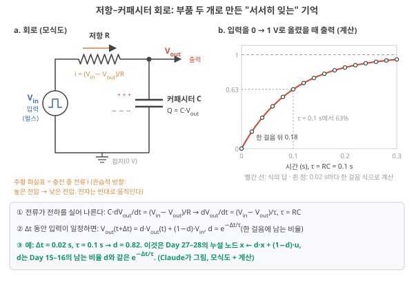
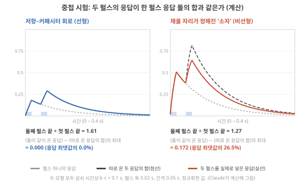
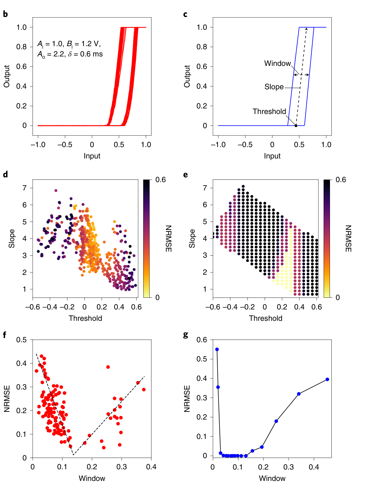
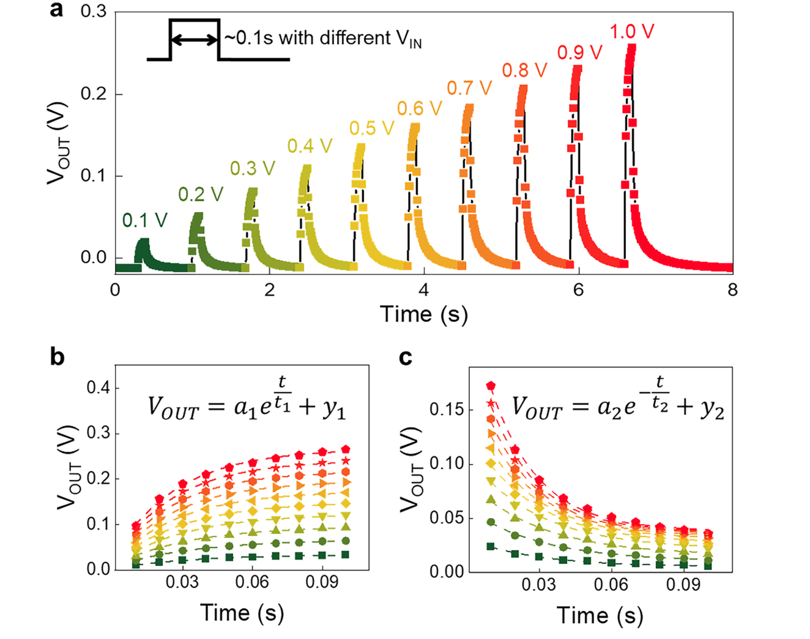
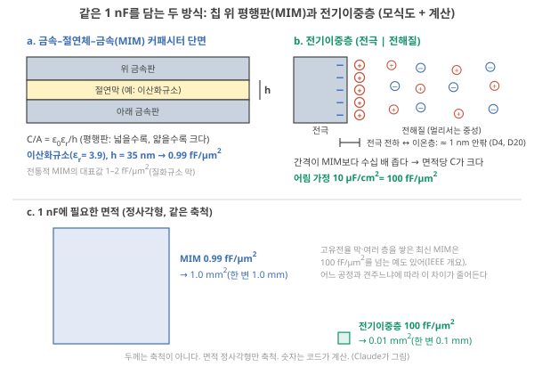
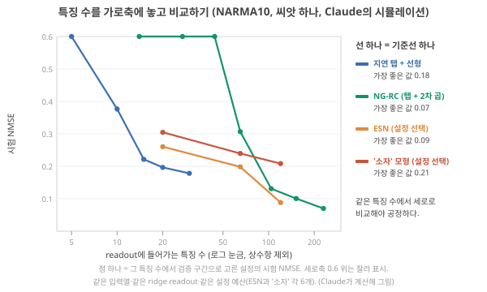

Day 30. R–C circuit으로 같은 응답이 나오면? 공정한 비교 규칙
Phase 3 · 좋은 시스템이란 무엇인가
이번 질문 — 저항–커패시터 회로로 같은 응답이 나오면 왜 이온 소재가 필요하고, 공정한 비교의 규칙은 무엇인가?
왜 배우나 (내 소재 연구와의 연결) — 이온 소재가 "기억을 가진다"고 말하려면 저항(R)과 커패시터(C) 두 부품 회로로도 같은 응답이 나오는지 먼저 확인해야 합니다. 내 소재의 PPF·펄스 응답이 단순 R–C 회로로 흉내 나는지 가르는 측정(중첩 시험)과 비교 규칙을 정하는 데 씁니다.
오늘의 장면 (입력 → 내부 변화 → 출력) — 입력 = 이온 소재와 R–C 회로에 같은 펄스열 → 내부에서 하는 일 = R–C 회로는 τ = RC로 한 걸음마다 d만 남기며 응답, 소재는 중첩 시험(입력을 두 배·합쳤을 때 출력이 그대로 두 배·합이 되는가)으로 비선형 여부 확인 → 출력 = "R–C 회로로 설명되는가 / 이온 소재만의 응답이 있는가" 판단과 공정한 비교 규칙 점검.
오늘 반드시 — PPF 지수가 크다는 것은 비선형의 증거가 아니고, 선형 R–C 회로도 PPF를 낸다. 비선형 여부는 중첩 시험이 가린다. 이온 소재의 근거 항목마다 비교 대상이 따로 있고, 공정한 비교는 같은 readout·조정 예산·특징 수를 요구한다.
나중에 더 봐도 되는 것 — 원리 증명 단계 연구에 공정 비교를 어디까지 요구할지의 반론 토론, 폴더의 두 모형 재현 예의 세부. 전기이중층 충전 τ ≈ RC는 이후 Day에서 다시 만납니다.
다음으로 넘어가는 기준 — '오늘 반드시'를 내 말로 한두 문장 말할 수 있으면 됩니다. 나머지는 뒤의 Day에서 다시 나옵니다.
이후 쓰이는 곳 — Day 37–40 전기이중층 충전의 τ ≈ RC, Day 31–32 같은 경계의 비용 비교, Day 45–46 이종접합 primitive를 회로와 견주기, Day 53–56 가설의 기준선
지난 학습 복습
지난 학습 단위(Day 29 · 기준선의 종류와 다항 회귀·NG-RC 비교)의 핵심을 다른 예로 확인합니다. 고르는 즉시 맞았는지와 이유가 보입니다. 틀려도 아래 학습자료는 그대로 열려 있고, 틀린 문제에는 다시 볼 곳이 붙습니다.
학습자료
4. "저항–커패시터 회로로 같은 응답이 나오면 왜 이온 소재인가"
이 구간을 읽고 나면 저항–커패시터 회로가 펄스에 어떻게 응답하는지 손으로 계산하고, "PPF가 있다"와 "비선형이다"를 중첩 시험으로 구별하며, 이온 소재가 단순 부품보다 낫다고 말하려면 무엇과 비교해야 하는지 항목별로 적을 수 있다.
저항–커패시터 회로: 부품 두 개로 만든 "서서히 잊는" 기억
왜 필요한가. 이온 소자 논문의 첫 그림은 흔히 "펄스를 주면 전류가 올라갔다가 서서히 돌아온다", "짧은 간격으로 준 두 번째 펄스의 응답이 더 크다"입니다. 뒤쪽을 PPF(paired-pulse facilitation, 쌍펄스 촉진)라 부르고, 둘째 응답 ÷ 첫 응답을 PPF 지수라 합니다(Day 10 3구간). 이 두 현상은 전자공학 1학년 실험의 부품 두 개로도 나옵니다(그림 3). 그 부품을 정확히 알아야 소자가 그보다 무엇을 더 하는지 물을 수 있습니다.
무엇인가. 저항(resistor, \(R\), 단위 Ω)은 전류가 흐르기 어려운 정도입니다. 전압 \(V\)를 걸면 전류 \(I = V/R\)가 흐릅니다(1 MΩ에 1 V면 1 µA). 커패시터(capacitor, \(C\), 단위 F)는 전하를 담는 그릇이고 담긴 전하가 \(Q = CV\)입니다(Day 7 기초 3: 커패시터). 둘을 한 줄로 이으면(입력 → 저항 → 커패시터 → 접지), 커패시터 양단의 전압이 출력입니다.
무엇을 볼지. 그림 3 a는 부품 연결입니다. 왼쪽 입력 전원에서 저항 \(R\)을 지나 가운데 출력 마디로, 거기서 커패시터 \(C\)를 지나 접지로 이어지는 길을 먼저 따라가 보세요. b는 입력을 0 V에서 1 V로 올렸을 때 출력이 1에 다가가는 모양입니다. 맨 아래 상자의 ①–③ 식은 아래 글에서 차례로 설명하니 지금은 건너뛰어도 됩니다.

입력이 들어오면 무슨 일이 — 순서대로 (그림 3 a).
- 입력 전압 \(V_{in}\)을 0에서 1 V로 올립니다. 그 순간 커패시터는 비어 있어 출력 \(V_{out}\) = 0이므로, 저항 양 끝의 전압 차는 \(V_{in} - V_{out}\) = 1 V이고 전류 \(i = (V_{in} - V_{out})/R\)가 흐릅니다.
- 그 전류가 커패시터로 전하를 실어 나릅니다. 전하가 쌓이면 \(V_{out} = Q/C\)가 오릅니다.
- \(V_{out}\)이 오를수록 저항 양 끝의 차가 줄어 전류도 줄고, 차오르는 빠르기도 느려집니다. 남은 차이에 비례하는 빠르기로 그 차이가 줄어드는 것, 이것이 지수 곡선입니다. 화공의 1차 반응에서 남은 농도에 비례하는 속도로 농도가 줄면 지수적으로 감소하는 것과 같은 꼴입니다(Day 15 기초). 출력은 1 V에 지수적으로 다가갑니다.
- 입력을 0 V로 내리면 방향만 바뀌어 커패시터가 저항을 통해 비워지고, 같은 꼴로 0에 다가갑니다.
식으로 적으면, 2단계의 "전하가 늘어나는 빠르기 \(dQ/dt\) = 흘러든 전류 \(i\)"에 \(Q = C\,V_{out}\)을 넣어
\[ C\,\frac{dV_{out}}{dt} = \frac{V_{in} - V_{out}}{R} \quad\Longrightarrow\quad \frac{dV_{out}}{dt} = \frac{V_{in} - V_{out}}{\tau},\qquad \tau = RC \]
- 기호: \(V_{in}\) 입력 전압 [V], \(V_{out}\) 커패시터 전압 = 출력 [V], \(dV_{out}/dt\)는 "출력이 1초에 몇 V씩 변하나".
- 단위: Ω × F = (V/A) × (C/V) = C/A = s. 그래서 \(\tau\)는 초입니다.
- 결과의 뜻: 남은 차이 \(V_{in} - V_{out}\)가 \(\tau\)마다 \(e^{-1}\) ≈ 0.37배가 됩니다. "\(\tau\) 동안 남은 차이의 63%가 메워진다"와 같은 말입니다. 예: \(R\) = 1 MΩ, \(C\) = 100 nF이면 \(\tau\) = 10⁶ × 10⁻⁷ = 0.1 s.
한 걸음씩 적으면 Day 15–16·Day 27–28의 식이 된다. 측정 장비나 컴퓨터는 값을 \(\Delta t\)마다 읽습니다. 한 걸음 동안 \(V_{in}\)이 일정하면, 남은 차이 \(V_{out} - V_{in}\)은 그 걸음 동안 \(d = e^{-\Delta t/\tau}\)배로 줄어 남습니다. 그래서 \(V_{out}(t+\Delta t) - V_{in} = d\,[V_{out}(t) - V_{in}]\)이고, 정리하면
\[ V_{out}(t+\Delta t) = d\,V_{out}(t) + (1-d)\,V_{in},\qquad d = e^{-\Delta t/\tau} \]
입니다. 이것은 Day 27 기초: 필터의 누설 노드 \(x \leftarrow d\,x + (1-d)\,u\)와 같은 식이고, \(d\)는 Day 15 기초의 남는 비율 \(d\)와 같은 양입니다(Day 15–16의 식 \(x(t+1) = d\,x(t) + u(t)\)는 새 입력에 \(1-d\)를 곱하지 않은 판이라 출력의 크기만 다릅니다). 그러니 3구간의 '저항–커패시터 필터 65개'는 \(\tau\)가 서로 다른 이 회로 65개를 나란히 놓고 매 걸음 출력을 읽은 것과 같습니다.
값·계수·시간상수를 섞지 않기. 예: \(\tau\) = 0.1 s, \(\Delta t\) = 0.02 s면 \(d = e^{-0.2}\) = 0.82입니다. 이 0.82는 출력 전압 값이 아니라 "남은 차이의 82%가 다음 걸음에 남는다"는 계수입니다. 같은 말로 한 걸음에 남은 차이의 18%(= \(1-d\))가 메워지고, 이 \(1-d\)가 Day 16 기초: leak rate에서 이웃 연결이 없을 때의 leak rate 자리입니다. 회로의 물리 성질은 \(\tau = RC\) 하나이고, \(d\)는 \(\tau\)와 읽는 간격 \(\Delta t\)가 함께 정합니다. 그래서 같은 회로를 0.01 s마다 읽으면 \(d = e^{-0.1}\) = 0.90으로 바뀝니다. 비어 있는 커패시터에 1 V를 한 걸음 걸면 \(0.82 \times 0 + 0.18 \times 1\) = 0.18입니다(그림 3 b의 첫 흰 점, 아래 손 계산의 첫 줄).
펄스 둘을 손으로 따라가기 (\(\tau\) = 0.1 s, 펄스 높이 1, 폭 0.02 s, 두 펄스 시작 간격 0.05 s).
- 첫 펄스 동안(0.02 s) 출력은 \(1 - e^{-0.02/0.1} = 1 - e^{-0.2} = 0.18\)까지 오릅니다.
- 둘째 펄스가 올 때까지 0.03 s 쉬면서(입력 0 V이므로 위 한 걸음 식에서 \(V_{in}\) = 0이고, 쉬는 0.03 s를 한 걸음으로 보면 \(d = e^{-0.3}\) = 0.74) \(0.18 \times e^{-0.3} = 0.13\)으로 내려갑니다.
- 둘째 펄스 동안 0.13에서 출발해 남은 차이(0.87)의 \(1-e^{-0.2}\) = 18%를 메워 \(1 - 0.87 \times e^{-0.2} = 0.29\)까지 오릅니다(한 걸음 식으로는 \(0.82 \times 0.13 + 0.18 \times 1 = 0.29\)).
- 둘째 응답 ÷ 첫 응답 = 0.29 ÷ 0.18 = 1.61. 논문 용어로 "PPF 지수 161%"입니다. 저항 하나와 커패시터 하나로요.
이름과 정확한 뜻. 이 회로는 빠른 변화는 흐리고 느린 변화는 통과시키므로 저역 통과 필터(Day 27 기초: 필터)의 가장 단순한 물리 구현입니다. 그리고 선형입니다. 입력을 두 배로 하면 출력도 두 배, 두 입력을 같이 넣은 응답은 따로 넣은 응답의 합입니다. PPF가 1보다 큰 것은 첫 펄스의 잔여분 위에 둘째 응답이 더해졌기 때문이지, 소자가 두 번째 입력을 "더 세게" 받아들였기 때문이 아닙니다.
기준선으로 쓰는 법. 소자의 펄스 응답에서 감쇠 시간상수 \(\tau\)를 잰 뒤(예: 0.1 s), \(RC\)가 같은 저항과 커패시터(1 MΩ과 100 nF)를 소자 자리에 꽂고, 같은 펄스열을 넣어 같은 방식으로 출력을 읽고 같은 readout을 학습합니다. 시간척도가 여러 개 필요하면 \(\tau\)가 다른 회로 여러 개를 나란히 둡니다(3구간의 필터 65개가 그 소프트웨어판). 이 기준선과 성능이 같다면, 그 과제에서 소자가 준 것은 "\(\tau\)가 이 값인 선형 기억"까지라고 읽습니다 해석.
이온 소자와 닮은 곳, 다른 곳. 전해질 속을 이온이 지나가는 길은 저항 \(R\)처럼, 전극 표면의 전기이중층은 커패시터 \(C\)처럼 행동하므로, 이온 소자의 펄스 응답이 첫 근사로 이 회로를 닮는 것은 우연이 아닙니다(Day 37–38에서 \(\tau \approx RC\)로 다시 다룹니다). 닮은 곳: 지수적으로 차고 비는 모양, 시간상수 = 저항 × 정전용량. 다른 곳: 실제 이온 소자에서는 이온이 한쪽에 몰려 모자라거나, 전극에서 화학 반응이 일어나거나, 정전용량이 전압에 따라 변해 선형이 아닐 수 있습니다. 그 '다른 곳'이 소자가 회로보다 더 줄 수 있는 몫의 후보이고, 바로 아래 4-1의 중첩 시험이 그것을 잽니다 해석.
4-1. 중첩 시험: PPF와 비선형을 가르는 측정
직관. 선형이면 "같이 넣은 응답 = 따로 넣은 응답의 합"입니다(superposition principle, Day 17 기초: 비선형). 그러니 측정을 세 번 하면 됩니다. 펄스 A만, 펄스 B만(같은 시각에), 둘 다. 그리고 (둘 다) − (A만 + B만)을 그립니다. 0이면 선형, 0에서 벗어난 만큼이 비선형입니다. 이것을 중첩 시험(superposition test)이라 부르겠습니다.
무엇을 볼지. 그림 4의 왼쪽 칸은 위의 저항–커패시터 회로이고, 오른쪽 칸은 비교를 위해 지어낸 가상의 '소자'입니다. 이 '소자'는 채울 자리가 정해져 있어서 이미 찬 만큼 새 입력이 덜 들어가는(포화) 규칙을 따릅니다. 두 칸 모두 감쇠 시간상수는 0.1 s로 같습니다. 각 칸에서 색 실선(두 펄스를 같이 넣은 응답)과 검은 긴 점선(펄스를 하나씩 따로 넣은 두 응답을 더한 것)이 겹치는지만 먼저 보세요.

왜 오른쪽은 깨지나. 오른쪽 규칙에서 새 입력이 들어가는 몫은 \(k\,V(1-x)\)로, 지금 상태 \(x\)에 달려 있습니다. 첫 펄스가 \(x\)를 약 0.39까지 올려 둔 뒤 둘째 펄스가 오면 \(1-x\)가 약 0.61로 줄어 둘째 펄스가 덜 들어갑니다. 따로 넣을 때는 둘째 펄스도 \(x\) = 0에서 시작하므로 다 들어갑니다. 그래서 '같이 넣은 응답'이 '따로의 합'보다 작습니다. 왼쪽 회로에서는 새 입력의 몫 \(V_{in}/\tau\)가 상태와 상관없어서 이런 일이 생기지 않습니다(Claude 계산).
작은 숫자로 읽기. 왼쪽 회로는 PPF 지수 1.61로 "강한 촉진"처럼 보이지만 중첩 차이가 0입니다. 오른쪽 '소자'는 PPF 지수 1.27로 더 약해 보이지만 중첩이 26.5% 깨집니다. PPF 지수의 크기는 비선형의 크기가 아닙니다. 소자 논문에서 PPF·단기 기억 곡선만 보고 "비선형 동역학"이라고 쓴 문장을 만나면, 중첩 시험(또는 같은 정보를 주는 진폭을 바꾼 측정)이 있는지 확인하세요. 해석
적용 조건. (1) 중첩 시험은 같은 소자, 같은 초기 상태에서 세 번 측정해야 의미가 있습니다. 측정 사이에 소자가 완전히 돌아오지 않으면(앞 측정의 흔적이 다음 측정에 남는 것, Day 24에서 본 넘어옴(carry-over)) 차이가 생겨도 비선형 때문인지 초기 상태 때문인지 모릅니다. (2) 선형이어도 기억은 있습니다. 선형 소자는 기준선 ③·⑥과 같은 일을 할 수 있을 뿐, 곱셈이 필요한 과제의 몫은 readout이 대신할 수 없습니다(1-1의 직선은 \(x^2\)을 못 만든다).
여기까지: 그림 3을 따라 저항–커패시터 회로의 펄스 응답(0.18 → 0.13 → 0.29, PPF 지수 1.61)을 손으로 계산하고, 그림 4에서 PPF 지수가 커도 중첩 차이가 0이면 선형이라는 것을 말할 수 있다. 다음: 실제 소자 논문 두 편에서 소자의 계산 역할이 몇 개의 숫자로 요약된 예.
4-2. 소자의 계산 역할은 간단한 모형으로 재현되는가 — 폴더의 두 예
비선형까지 있는 소자라면 단순 회로로는 안 될까요? 폴더의 두 논문은 정직하게도 그 반대 방향의 증거를 줍니다.
Zhong 2022 (Nat. Electron.). 휘발성 memristor(전압 이력에 따라 저항이 잠시 바뀌었다가 돌아오는 2단자 소자)를 reservoir 노드로 쓴 완전 아날로그 RC 시스템입니다(Day 9에서 전력 주장을 봤습니다). 저자들은 노드의 입력–출력 곡선에서 문턱(threshold, T), 기울기(slope, S), 창(window, W) 세 특징을 뽑아 "단순화한 노드 모형"을 세우고, 그 모형이 노드의 핵심 특성을 유지한다고 씁니다. Zhong 2022, p.675 모형은 "문턱 아래면 0, 위면 기울기 S로 오르다 1에서 멈추는" 구간 직선 함수에, 문턱 전압이 지난 입력의 선형 필터로 움직인다는 식 하나를 더한 것입니다. Zhong 2022, p.679–680 그리고 Methods에 이렇게 적습니다. "시뮬레이션 결과는 이 세 매개변수로 모형화할 수 있다면 다른 소자로도 노드를 구현할 수 있음을 시사한다." Zhong 2022, p.680
원문 그림을 읽기 전에. 아래 그림의 위 두 칸은 측정한 입력–출력 곡선(b, 빨강)과 세 특징으로 만든 모형 곡선(c, 파랑)입니다. 가운데 두 칸은 문턱(가로)과 기울기(세로)를 바꿔 가며 잰 성능 지도로, 점의 색이 오차(NRMSE: 정답의 흩어짐으로 나눠 정규화한 오차의 한 종류. 0에 가까울수록 좋고, 이 그림에서는 밝을수록 좋음)입니다. d가 실험, e가 모형 시뮬레이션입니다. 아래 두 칸은 창(W) 크기에 따른 오차로 f가 실험, g가 시뮬레이션입니다. 실험 칸과 시뮬레이션 칸의 모양이 얼마나 닮았는지가 볼 곳입니다.

Pei 2026 (Nat. Mater.). 하이드로겔 이온 reservoir 논문입니다. 저자들은 소자의 단기 기억이 "이중 지수(two-phase exponential) 모형으로 정확히 기술된다"고 쓰고 Pei 2026, p.1200, 측정한 출력이 그 소자 모형의 시뮬레이션과 일치함을 보인 뒤, 아홉 개 벤치마크(음성 숫자, 손 제스처, 손글씨 숫자 등)를 그 모형으로 시뮬레이션해 90% 이상을 보고합니다. Pei 2026, p.1200–1201
원문 그림을 읽기 전에. 아래 그림에서 알아갈 한 가지는 '이 소자의 펄스 응답이 오르는 지수 곡선 하나와 내려가는 지수 곡선 하나로 잘 맞는가'입니다. a는 입력 전압을 키우며 잰 출력이고, b와 c는 그 오르는 부분과 내려가는 부분에 지수 곡선(점선)을 맞춘 것입니다.

해석 이것이 뜻하는 것. 두 논문 모두 좋은 공학입니다. 소자를 몇 개의 숫자로 요약할 수 있어야 설계와 최적화가 가능하니까요. 그러나 거꾸로 읽으면, 벤치마크 성능에 기여한 것은 그 몇 개의 숫자로 요약되는 동작이고, 그 동작은 다른 소자나 회로(문턱 소자 + 저항–커패시터 필터, 혹은 소프트웨어)로도 낼 수 있다는 뜻입니다. 그러면 "왜 이온 소재인가"의 답은 성능 그래프 밖에서 찾아야 합니다.
4-3. 이온 소재가 더 보여 줄 수 있는 것 — 그리고 각각의 비교 대상
아래는 이온 소재가 단순 부품이나 디지털(값을 0과 1의 숫자로 적어 계산하는 방식, Day 5 기초 1)보다 나을 수도 있는 자리들입니다. 어느 것도 저절로 참이 아니고, 오른쪽 열의 비교를 해야 주장이 됩니다. 해석
| 이온 소재의 후보 장점 | 무엇과 비교해야 하나 | 숫자로 보면 |
|---|---|---|
| 긴 \(\tau\)(ms–s)를 작은 면적에 | 같은 \(\tau\)의 저항–커패시터 회로의 면적, 그리고 디지털로 과거 샘플을 저장하는 비용 | 아래 "크기 어림" |
| 센서이면서 처리기(감지·변환이 한 재료에서) | 센서 + 증폭·ADC + MCU 사슬(Day 9 기초 1, Day 31–32) | 시스템 에너지·지연(Day 31–32) |
| 무르고 생체 적합(몸에 붙이거나 이식) | 유연 전자 회로 + 디지털 처리 | 같은 과제·같은 환경에서의 정확도와 안정성(Day 33–34) |
| 한 소자 안에 여러 시간척도·비선형 | 시간상수가 다른 필터 여러 개 + 비선형 소자 | 특징 수를 맞춘 성능(5구간 그림 6) |
| 전압으로 시간척도를 바꿈 | 커패시터를 바꿔 끼우는 회로, 디지털 필터 계수 변경 | 바꿀 수 있는 범위·속도·에너지 |
마지막 줄의 폴더 예: Lee 2025 (npj)는 HfO₂ 2단자 memristor의 이완 시간상수 \(\tau\)를 펄스 사이에 거는 기저 전압으로 바꿉니다. 기저 전압 0 V에서 0.92 ms이던 \(\tau\)가 1.6 V에서 최대 123 ms가 되어 100배 넘게 늘었습니다. Lee 2025 (npj), p.2–3 이 소자는 이온 소재가 아니라 전자 포획 기작으로 설명되지만, "전기로 시간척도를 고르는 손잡이"라는 틀은 이온 소자에도 그대로 적용됩니다 해석. 그 손잡이가 디지털 필터의 계수 하나를 바꾸는 것보다 무엇이 나은지는 별도로 보여야 합니다.
크기 어림(첫 줄). \(\tau\) = 1 s를 저항–커패시터 회로로 만든다고 합시다. 저항이 1 MΩ이면 \(C = \tau/R\) = 1 µF가 필요합니다. 이 커패시터를 칩 위에 만들면 어떤 모양일까요?
칩 위의 커패시터: 금속–절연체–금속(MIM). 칩에 넣는 커패시터는 흔히 배선층 사이에 아래 금속판, 얇은 절연막, 위 금속판을 차례로 겹친 MIM 커패시터(metal–insulator–metal)로 만듭니다(그림 5 a). 확인 IEEE TechNav "MIM capacitors" 개요로 대조
무엇을 볼지. 그림 5의 a와 b는 같은 1 nF를 담는 두 방식의 단면이고, c는 그 1 nF에 필요한 면적을 같은 축척의 정사각형으로 비교한 것입니다. a에서 두 금속판 사이 거리(절연막 두께 \(h\))와 b에서 전극 전하와 이온층 사이 거리(약 1 nm)를 먼저 비교해 보세요. c의 숫자는 아래에서 계산합니다.

마주 본 평행판이므로 정전용량은
\[ C = \frac{\varepsilon_0\,\varepsilon_r\,A}{h} \]
입니다. \(A\)는 판의 면적, \(h\)는 절연막 두께, \(\varepsilon_0\) = 8.85 × 10⁻¹² F/m는 진공의 유전율(vacuum permittivity, 진공에서 전기장과 전하를 잇는 상수), \(\varepsilon_r\)은 절연막의 비유전율(relative permittivity, 같은 전압에서 진공보다 전하를 몇 배 더 담게 하나, 이산화규소 약 3.9)입니다. 면적이 넓을수록, 막이 얇을수록 큽니다. 이산화규소 35 nm면 면적당 \(8.85\times10^{-3}\ \text{fF/µm} \times 3.9 \div 0.035\ \text{µm}\) ≈ 1 fF/µm²입니다(Claude 계산). 질화규소 막을 쓴 전통적인 MIM의 대표값이 1–2 fF/µm²이고, 고유전율 막과 여러 층을 쌓은 최신 공정에서는 100 fF/µm²를 넘는 예도 보고됩니다 확인 같은 IEEE 개요로 대조 [미확인: 특정 공정의 값].
1 fF/µm²로 잡으면 1 µF는 10⁹ µm² = 1,000 mm², 한 변 약 3.2 cm의 정사각형으로, 칩 하나에 넣기에는 터무니없이 큽니다. 저항을 1 GΩ으로 키우면 1 nF, 1 mm². 같은 1 nF를 전기이중층(전극 표면 전하와 그 앞 1 nm 안팎에 늘어선 이온층이 마주 본 아주 얇은 커패시터, Day 7 기초 3, Day 37–38)으로 만든다면, 두 '판' 사이가 MIM 절연막보다 수십 배 얇아 면적당 정전용량이 큽니다. 면적당 10 µF/cm²(= 100 fF/µm²; 매끈한 금속 전극의 대표값은 약 20 µF/cm²이고 15–50 µF/cm²가 보고되므로 Ge 2020, p.3216, 10은 그보다 작게 잡은 어림용 가정값 [가정])에서 0.01 mm²(한 변 0.1 mm)입니다. 즉 전통적인 아날로그 회로와 비교하면 이온 계면이 긴 시간척도를 작게 담을 여지가 있습니다 해석. 다만 최신 고밀도 MIM(100 fF/µm² 안팎)과 견주면 면적 차이가 크게 줄어들므로, 어느 공정의 커패시터와 비교했는지를 밝혀야 합니다 해석. 그리고 디지털과 비교하면 이야기가 다릅니다. 1초 동안 1,000번 잰 12 bit 샘플은 1,000 × 12 = 12,000 bit = 1.5 kB이고, 작은 MCU의 메모리에 쉽게 들어갑니다 [해석, Day 9의 가정값 기준]. 디지털의 비용은 면적이 아니라 매 샘플을 변환하고 처리하는 에너지입니다(Day 31–32). 어느 쪽이 비교 대상인지 정해야 "작다"가 뜻을 갖습니다.
"우리 소자는 PPF와 단기 기억을 보이므로 RC에 적합한 비선형 동역학을 가진다" — PPF 지수가 1보다 큰 것은 선형 저항–커패시터 회로에서도 나옵니다(그림 4 왼쪽, 1.61). 단기 기억도 마찬가지입니다. 비선형을 주장하려면 중첩 시험(또는 진폭을 바꾼 응답)이, RC 적합성을 주장하려면 과제와 기준선(1구간 표)이 필요합니다.
여기까지: 소자의 계산 역할이 단순 모형으로 재현될 때 "왜 이온 소재인가"를 항목마다 비교 대상(아날로그 회로인가 디지털인가)과 함께 말할 수 있다. 다음: 공정한 비교의 규칙.
- 저항–커패시터 회로: \(dV_{out}/dt = (V_{in} - V_{out})/\tau\), \(\tau = RC\)로 지수적으로 차고 비는 선형 저역 필터. \(\Delta t\)마다 적으면 \(V_{out} \leftarrow d\,V_{out} + (1-d)\,V_{in}\), \(d = e^{-\Delta t/\tau}\)(Day 27–28의 누설 노드, Day 15–16의 남는 비율 \(d\)). τ = 0.1 s, 폭 0.02 s, 간격 0.05 s 펄스 둘이면 0.18 → 0.13 → 0.29, PPF 지수 1.61(Claude 계산).
- PPF 지수는 비선형의 증거가 아니다. 중첩 시험((둘 다) − (따로의 합))이 0이면 선형이다.
- 폴더의 두 소자는 몇 개의 숫자로 요약한 모형으로 계산 역할이 재현됐다 Zhong 2022, p.675, 680 Pei 2026, p.1200–1201. 그러면 이온 소재의 근거는 면적·감지 통합·유연성·다중 시간척도·조절성에서 비교로 찾아야 한다 해석.
- "작다/싸다"는 비교 대상(아날로그 회로인가 디지털인가)을 정해야 뜻을 갖는다.
5. 공정한 비교의 규칙과 오늘의 반론
이 구간을 읽고 나면 공정한 비교의 규칙 일곱 가지를 이유와 함께 적고, 특징 수를 가로축에 놓은 그래프를 읽으며, "원리 증명 단계에서 이런 비교까지 해야 하나"라는 반론에 주장 강도를 낮추는 방식으로 답할 수 있다.
직관. 달리기 기록을 비교할 때 한 사람은 내리막에서, 한 사람은 오르막에서 뛰었다면 기록은 비교할 수 없습니다. 비교가 공정하려면 바꾼 것이 비교하려는 그 하나뿐이어야 합니다. 소자 RC에서 "그 하나"는 소자(또는 소자의 한 성질)이고, 나머지(데이터, readout, 조정 노력, 특징 수)는 같아야 합니다.
규칙 일곱 가지.
- 같은 데이터 나누기. 훈련·검증·시험 구간을 같게 하고, 시험 구간은 마지막에 한 번만 봅니다. 시험 구간을 보며 설정을 고르면 그것은 시험이 아니라 훈련입니다(Day 10 기초 4).
- 같은 readout, 같은 규제. Singh 2026은 reservoir 자체를 특성화할 때는 선형 readout이 가장 명확한 기준이라고 씁니다. 그래야 비선형 변환과 시간 처리를 측정된 물리 상태가 주로 공급해야 하기 때문입니다. 더 복잡한 비선형 readout은 응용 시연에는 쓸 수 있지만 따로 보고해야 하고, 그 성능만으로 소자의 계산 기여를 추론해서는 안 된다고 씁니다. Singh 2026, p.18
- 같은 조정 예산. 3구간의 ESN은 조정 없이 0.52, 같은 예산으로 고르면 0.16이었습니다. 소자 쪽 설정을 수십 번 바꿔 본 만큼 기준선 쪽도 바꿔 봐야 합니다.
- 특징 수를 가로축에. Singh 2026은 원시 입력, 정적 소자 응답, 동적 reservoir가 서로 다른 수의 특징을 낼 때는 "특징 수가 다른 구성끼리만 비교하지 말고 특징 수의 함수로 성능을 보이라"고 권합니다. Singh 2026, p.18 그림 6이 그 그래프입니다. 특징 수가 많아도 서로 비슷한 측정값이면 readout이 볼 수 있는 실제 방향의 수는 작다는 것도 함께 기억하세요(Day 25 기초: kernel quality).
- 귀속 대조(attribution control). 같은 글은 대조군 셋을 제안합니다. 입력 자체(센서 응용이면 원시 센서 출력)를 같은 readout으로, 같은 소자의 이력에 무관한 응답(자극 사이를 완전히 회복시키거나 정상 상태 전달 곡선으로 재서 지금 출력이 지금 입력에만 달린 것)을, 그리고 실제 시간 입력을 준 동적 reservoir를. 이 비교가 "이력에 의존하는 물리 동역학이 입력 표현과 정적 응답 이상의 정보를 주는지"를 직접 시험한다고 씁니다. 다만 이 대조들은 성능을 부품별 몫으로 정확히 쪼개는 계산이 아니라 진단이라고 못 박습니다. Singh 2026, p.18
- 여러 씨앗, 여러 소자. 그림 2(Day 29)의 가는 선처럼 결과에는 범위가 있습니다. 하나의 행운의 숫자를 보고하지 않습니다(Day 33–34에서 소자 편차로 확장).
- 정확도와 비용을 함께. Liang은 기존 하드웨어 RC 연구를 비교해 네 가지를 정리합니다. 여러 물리 노드로 기계학습·시간 신호 처리가 가능하고, 정확도는 쓸 만하지만 최신 경사 기반 신경망보다 낫지 않으며, 하드웨어 잡음 때문에 같은 구성이면 소프트웨어 RC가 대개 낫고, 하드웨어 RC의 장점은 정확도가 아니라 시스템 복잡도·전력·학습 비용·속도 쪽에 있다는 것. Liang 2024, p.201 그리고 "디지털 RC보다 자원을 더 쓰는 physical reservoir computing은 의미가 없다"고 씁니다. Liang 2024, p.202 in-memory 쪽 리뷰인 Jiang 2026도 비슷한 원칙을 제안합니다. 응용별 정확도 문턱(예: CIFAR-10·ResNet-20에서 소프트웨어 기준선 대비 정확도 손실 1% 미만)을 정하고, 오차를 줄이는 기법의 면적·지연·에너지 부담을 함께 정량하자는 것입니다. Jiang 2026, p.1120 3구간의 열 모형 표 마지막 열(한 걸음 곱셈 수)이 이 비용 비교의 가장 작은 예이고, 비용 쪽은 Day 31 기초: 시스템 비용에서 항목별로 셉니다.
무엇을 볼지. 그림 6은 그림 2(Day 29)와 같은 과제를 이번에는 가로축에 특징 수를 놓고 다시 잰 것입니다. 가로축은 로그 눈금(같은 간격마다 몇 배씩 커지는 눈금, Day 1 기초: 로그 축)입니다. 선 하나가 기준선 하나이고, 가로축 65에서 세로로 선을 그어 네 선의 높이를 비교하는 것이 읽는 법입니다.

그림 6에서 읽을 것. 특징 65개에서 세로로 보면 ESN 0.20, '소자' 0.24, NG-RC 0.31이고, delay tap은 특징 30개로 이미 0.18입니다. 특징 120개 근처에서는 ESN 0.09, NG-RC(104개) 0.13, '소자' 0.21. 이 가상의 '소자'는 어느 특징 수에서도 가장 좋은 기준선을 넘지 못합니다. 이것이 이 모형의 결론이지 이온 소자 전체의 결론은 아닙니다 해석. 중요한 것은 그래프의 형식입니다. 논문이 특징 수가 다른 두 점만 보여 주면, 그림 2(Day 29)의 "NG-RC 230개 0.04 vs 소자 65개 0.26"처럼 어느 쪽으로든 결론을 낼 수 있습니다.
폴더의 정직한 예 다시 보기. Day 10에서 본 Lee 2025 (npj)는 원시 입력 기준선(시간 프레임 넷을 그대로 readout에 넣은 것, 91.32%)이 소자 결과(90.01%)보다 높다는 것을 스스로 적었습니다. 대신 readout 크기가 3136×10에서 2352×10으로 작다는 점을 내세웁니다. Lee 2025 (npj), p.8 기준선을 이기지 못했을 때 주장을 비용(특징 수) 쪽으로 옮긴 예입니다. 다만 그 주장도 "특징 2,352개에서 원시 입력 기준선은 몇인가"(특징 수 곡선)가 있어야 완결됩니다 해석.
여러분의 소자로 손글씨·음성 같은 분류 과제를 한다고 합시다. 규칙 1–7 중 실험을 새로 하지 않고 데이터 분석만으로 지킬 수 있는 것은 몇 개일까요? 먼저 세어 본 뒤 아래 점검을 푸세요.
오늘의 반론
가장 강한 반론은 이것입니다. "원리 증명(proof-of-concept) 단계의 소재 연구에 NG-RC, 조정한 ESN, 특징 수 곡선까지 요구하는 것은 과하다. 새 소재가 계산에 '쓰일 수 있다'를 보이는 것만으로도 의미가 있다."
이 반론은 일부 맞습니다. Singh 2026도 "모든 원리 증명 연구가 이 요구를 다 충족할 필요는 없다"고 씁니다. 그러나 같은 문장의 뒷부분이 답입니다. "주장의 강도는 제시된 실험 증거의 수준과 일치해야 한다." 그리고 증거 수준을 셋으로 나눕니다. reservoir 기능의 시연(재현 가능한 상태 + 계산 지표), 그 기능의 물리 기판 귀속(입력 부호화·특징 수·상태 획득·readout 복잡도와 구별하는 대조), 기술적 배치 가능성(안정성·편차·환경·보정·지연·처리율·에너지 경계). Singh 2026, p.19 이 세 수준은 아래 접는 기준 후보의 증거 네 단계 중 단계 ① 기능 구현, 단계 ② 소재 기여 입증, 단계 ④ 배치 가능성에 해당하고, 단계 ③ 경쟁력(같은 경계에서 단순 기준선보다 성능이나 비용이 나은가)은 규칙 7의 Liang 쪽 요구입니다 해석. 그러니 정직한 답은 "다 하라"가 아니라 "한 만큼만 주장하라"입니다. 기준선이 하나도 없어도 "소자 상태로 이 과제를 이 정확도로 풀었다"(단계 ①)는 쓸 수 있습니다. 다만 "이 정확도는 소재의 동역학 덕분이다"(단계 ②)에는 원시 입력·이력 없는 응답 대조가, "기존 방식보다 낫다"(단계 ③)에는 delay tap 같은 단순 기준선과 비용 비교가 있어야 합니다. delay tap 기준선(1구간 표의 ③줄)은 엑셀로도 하루면 되니, 적어도 그것은 돌려 보고 결과가 허락하는 단계까지만 쓰는 것이 좋습니다 해석.
내 소자(또는 앞으로 만들 소자)로 내일 당장 돌릴 수 있는 기준선을 1구간 표에서 둘 고르세요. 그 둘을 이기면 논문에 쓸 수 있는 문장과, 지면 쓸 수 있는 문장을 각각 한 줄씩 적어 보세요. 지는 경우의 문장이 써지지 않는다면 그 실험의 설계를 다시 볼 때입니다.
여기까지: 그림 6에서 같은 특징 수끼리 세로로 비교하고, 새 논문에서 지킨 규칙과 빠진 규칙을 골라 "한 만큼만" 주장하는 문장으로 고쳐 쓸 수 있다. 다음: 총정리와 종합 퀴즈.
- 공정한 비교 = 바꾼 것이 소자 하나뿐. 같은 데이터 나누기, 같은 선형 readout, 같은 조정 예산, 특징 수 곡선, 귀속 대조, 여러 씨앗·소자, 정확도와 비용 함께 Singh 2026, p.18 Liang 2024, p.201–202.
- 특징 수가 다른 두 점의 비교는 어느 쪽으로든 결론을 낼 수 있다. 같은 특징 수에서 세로로 비교한다.
- 기준선을 못 이기면 성능 경쟁력 대신 비용 쪽으로 주장을 옮기되, 그것도 비교로 보인다 Lee 2025 (npj), p.8.
- 반론에 대한 답: 다 하라가 아니라 한 만큼만 주장하라 Singh 2026, p.19. 기능 시연(단계 ①)은 기준선 없이도 말할 수 있고, 소재 기여(단계 ②)·경쟁력(단계 ③)은 해당 대조·기준선이 있을 때만 말한다.
오늘의 총정리
자료를 덮고 아래 표를 먼저 머릿속으로 채운 뒤 펼쳐 보세요. 그다음 종합 퀴즈를 풉니다.
한 장 요약 펼치기
| 질문 | 한 줄 답 | 근거·조건 |
|---|---|---|
| 기준선의 종류 | 평균값 → 원시 입력 → delay tap(선형 기억) → 다항·NG-RC → 소프트웨어 ESN → 단순 필터·저항–커패시터·정적 소자 → MCU+NN. 이긴 기준선이 주장의 범위 | 1구간 표 Singh 2026, p.18, 20 |
| NG-RC란 | 지연 입력 + 그 곱을 특징으로, 선형 readout만 학습. reservoir가 없다. 특징 수 \(\binom{k+p}{p}\) | 2구간, 원 논문 서지·초록·특징 구성 확인 Gauthier 2021 [미확인: 실험 결과 세부] |
| 숫자로 비교하면 | 탭20 0.17, NG-RC(230) 0.04, 조정한 ESN 0.16, 조정 안 한 ESN 0.52, '소자' 0.26, '소자'+잡음 0.38 | Claude의 시뮬레이션(NARMA10, 같은 readout·예산). 사전 테스트·먼저 만들어 보기에서 "소프트웨어 ESN보다 나으면 충분"이라고 썼다면 여기가 달라질 지점 |
| 오늘의 숫자 | 이 설정의 NARMA10 곱셈항은 86%가 선형으로 설명된다. 저항–커패시터 회로의 PPF 지수 1.61 | [해석, Claude 계산] |
| 저항–커패시터 회로와 같은 응답이면 | 계산 역할은 단순 모형으로 재현될 수 있다. 이온 소재의 근거는 면적·감지 통합·유연성·다중 시간척도·조절성을, 각각의 비교 대상과 함께 | Zhong 2022, p.675, 680 Pei 2026, p.1200–1201 해석 |
| 공정한 비교 | 같은 나누기·readout·조정 예산, 특징 수 곡선, 귀속 대조, 여러 씨앗, 정확도+비용 | Singh 2026, p.18 Liang 2024, p.201–202 Jiang 2026, p.1120 |
| 오늘의 반론 | 원리 증명 단계에 과한 요구다 → 다 하라가 아니라 한 만큼만 주장하라. 기능 시연·소재 기여·경쟁력·배치 가능성을 나눠, 증거가 있는 단계까지만 쓴다 | Singh 2026, p.19 |
| 모르는 것 하나 | 실제 이온 소자가 같은 특징 수에서 NG-RC·조정한 ESN을 이긴 사례가 폴더에 있는가 | 폴더에서 찾지 못함. Day 47–48 평가표에서 확인 |
내 답에 꼭 들어가야 할 것
- 기준선을 최소 네 종류(원시 입력, delay tap 선형, NG-RC 또는 다항, 소프트웨어 RC) 들고, 각각이 소자에서 무엇을 뺀 비교이며 이기면 무엇을 말할 수 있는지 적었나?
- NG-RC 특징을 작은 숫자로 직접 만들어 보이고, 특징 수가 지연 수·차수에 따라 어떻게 느는지 적었나?
- "RC"의 두 뜻을 구별하고, 저항–커패시터 회로로도 PPF가 나온다는 것과 중첩 시험이 무엇을 가르는지 적었나?
- "왜 이온 소재인가"를 성능 그래프가 아니라 비교 대상이 정해진 항목(면적, 감지 통합, 유연성, 다중 시간척도, 조절성 중 하나 이상)으로 적었나?
- 공정한 비교의 규칙 중 내 실험에서 지킬 수 있는 것과 없는 것을 구분하고, 없는 것에 맞춰 주장 강도를 낮춘 문장을 적었나?
장부에 옮길 후보
- 병목 장부: (응용이 요구하는 것) 같은 특징 수에서 NG-RC·조정한 소프트웨어 RC 이상의 성능, 또는 같은 성능에 더 싼 비용 vs (메커니즘이 허용하는 것) 몇 개의 숫자로 요약되는 소자 동작은 단순 회로·소프트웨어로 재현된다 Zhong 2022, p.680. 이온만의 몫은 아직 비교로 보이지 않았다.
- 병목 장부: (응용이 요구하는 것) 긴 \(\tau\)를 작은 면적에 vs (메커니즘이 허용하는 것) 전기이중층의 높은 면적당 정전용량 [미확인, 자릿수]. 비교 대상이 디지털이면 면적이 아니라 에너지가 쟁점(Day 31–32).
- 아직 모르는 것: 실제 이온 소자 RC가 같은 특징 수에서 NG-RC를 이긴 사례. / 내 소자의 중첩 시험 결과(선형인가). / NG-RC 원 논문의 실험 조건과 결과(본문 미대조).
- 용어집: 기준선(baseline), 원시 입력 기준선, delay tap, 선형 회귀, 다항 회귀, NG-RC, 특징 수, 저항–커패시터 회로, 저역 통과 필터, 중첩 시험(superposition test), PPF 지수, 귀속 대조(attribution control), 조정 예산, 특징 수 곡선.
- 접는 기준 후보: "내 소자 RC가 delay tap + 선형 회귀 기준선을 이기지 못하고, 비용(특징 수·에너지·면적)에서도 이득을 보이지 못하면, '기존 방식보다 유용한 계산 소자'라는 주장은 하지 않는다." 이것은 기능이 없다는 판정이 아닙니다. 증거는 네 단계로 나눠 말합니다. ① 기능 구현: 소자 상태로 과제를 기준 이상으로 푼다. ② 소재 기여 입증: 원시 입력·이력 없는 응답 대조보다 낫다. ③ 경쟁력: 같은 경계에서 단순 기준선보다 성능이나 비용이 낫다. ④ 배치 가능성: 실제 환경의 안정성·전력·크기를 만족한다. 기준선에 지면 단계 ③을 주장하지 못하는 것이지 단계 ①·②까지 사라지는 것은 아닙니다.
더 읽을거리
서지와 읽음·대조 상태는 참고문헌 페이지에 있습니다. 쪽수는 인쇄 쪽수입니다. 아래는 모두 보충이며, 본문은 이것 없이 읽히도록 썼습니다.
내가 읽은 논문 (다시 볼 곳)
- Liang 2024, Nat. Electron. 7, 193–206. p.201(기존 하드웨어 RC 비교에서 얻은 네 가지 사실), p.202("디지털 RC보다 자원을 더 쓰는 physical reservoir computing은 의미가 없다"). 5구간의 규칙 7.
폴더에 있지만 아직 읽지 않은 논문 (Claude가 대조함)
- Singh 2026, Adv. Mater. e74897. p.18(5.1절: 입력 기준선·이력 무관 응답·동적 reservoir의 대조, 특징 수의 함수로 보고, 선형 readout을 기준으로), p.19(증거의 세 수준), p.20(Table 3 귀속 대조 항목).
- Zhong 2022, Nat. Electron. 5, 672–681. p.675(세 특징 T·S·W와 단순화 모형), p.676(Fig. 3), p.679–680(Methods 식 1–3과 "다른 소자로도 구현 가능").
- Pei 2026, Nat. Mater. 25, 1199–1208. p.1200(이중 지수 모형, 아홉 과제는 시뮬레이션), p.1201(측정과 소자 모형 시뮬레이션의 일치).
- Stepney 2024, Natural Computing 23, 665–685. p.676–677(NARMA의 정의·매개변수와 벤치마크로 쓸 때의 주의).
- Lee 2025 (npj), npj Unconv. Comput. 2, 27. p.2–3(기저 전압으로 τ 0.92 → 123 ms), p.8(원시 입력 기준선 91.32% vs 90.01%).
- Jiang 2026, Nat. Mater. 25, 1110–1124. p.1120(소프트웨어 기준선 대비 정확도 손실 문턱과 오버헤드를 함께 보고하자는 제안).
폴더 밖 (서지는 참고문헌 페이지에서 확인 상태를 보세요) 미확인
- Gauthier, Bollt, Griffith & Barbosa 2021, Nat. Commun. 12, 5564, "Next generation reservoir computing". NG-RC의 원 논문. 서지는 Crossref로 확인, 공개 전문(PubMed Central)에서 특징 벡터 구성·ridge readout·예열 길이 부분만 대조, 실험 결과는 미대조.
학습 완료
이 학습 단위를 마쳤으면 눌러 주세요. 쓰기·영상·심화·추가 연습은 필요 없고, 퀴즈 점수와도 따로 기록됩니다. '완료'는 이 단위를 끝냈다는 표시이지 모든 내용을 완벽히 익혔다는 뜻이 아닙니다.
선택 활동: 글로 정리하기
선택 활동 펼치기 · 백지 회상, 가르치듯 내 답, 사전 테스트 다시 풀기 (학습 완료와 무관)
가르치듯 내 답. 후배에게 설명한다고 생각하고 짧게(3–5문장 또는 작은 도식 하나) 답합니다.
사전 테스트 다시 풀기. 같은 문제를 이유와 함께 다시 풉니다(정답을 이미 본 문제라 이해 점검 점수로 쓰지 않습니다).